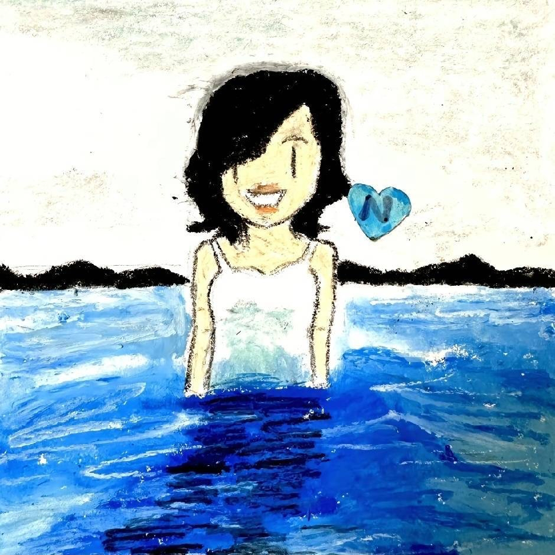

所以啊，与其发全民减肥的食谱，不如多放几天假，改善改善工作环境，人自然就瘦下来了，生育率也上去了
光顾着西天取经了，忘记取你性命了
博主博主，有没有无水印下载的方式，想拿去做电脑壁纸
可以求个不带歌词的原视频吗想做电脑壁纸，或者给个教程也行 [感谢] [感谢] [感谢]
历史书太小，装不了他们的伟大[感谢][感谢][感谢]
致敬
国家必须给他家人高额抚恤金
现在的开山岛发展的怎么样了？
最难的是男的走后，女的继续守岛的日子，全是回忆，没有盼头
甚至这篇电影都不需要VIP
中国人总是被他们当中勇敢的人保护得很好[流泪]
国家就是有一批普普通通，但是信仰坚定的老百姓支撑着，不断的发展。毛爷爷说过，历史是人民书写的
该写进教科书
绷不住了[流泪]
有幸和王仕花姨拍过照[流泪]
王仕花也是巾帼英雄！！作为妻子不离不弃，即使丈夫去世了她也在继续守护祖国的岛！
弹幕也是逆天了，各种说待遇的，待遇再好，放到这种环境，正常人谁能愿意啊？人家才是真英雄，致敬[玫瑰]！
没人心疼她，可她还要心疼弟弟，真的哭死[流泪]
这是一几年的感动中国十大人物之一[流泪]当时我还在学校和同学们一起看开学第一课和感动中国十大人物，现在物是人非了，敬逝去的青春
可以说他军服见证了人民海军的崛起
看完弹幕，觉醒哥和汉奸多到不敢想象[憨笑]
我们这的 开山岛
🙏🏻
人和人的差距评论区已经显现出来了[尬笑][尬笑][尬笑]
让当地的县派人守岛，三个人一组守十天，也不至于抓住一个不放吧[翻白眼][尬笑][尬笑][尬笑]
@菜就多恋、 开山岛，我说我好像在哪见过[流泪]
哥，有个吃主一哥在模仿你[捂脸]
陈奕迅的演唱会，大家经济允许的情况下，有机会有时间还是去看看。毕竟Eason总有老的一天，正如Eason说的开一场就会少一场，不要给自己留下遗憾
广东话跟闽南语不能失传！！！！！太好听了。我叮又叮不懂。学又学不费。
会不会有这个呀？我真的特别喜欢这个，是我用了特别久的微信头像。 
天津我去了 广州我去不了了[流泪][流泪]
再见已是物是人非
？
这是老姐吗[呲牙]，哈哈哈，笑得我肚子疼
老弟小时候是不是倒立着睡觉？
这样才对吧
老姐怎么带了个一级头
小时候就跟特效长的一样？[憨笑]
老弟梦到哪句说哪句
《老弟的头怎么凹凹的》[黑脸][黑脸]
像这个
这素
小时候像爷爷 越来越年轻了老弟[黑脸]
老弟这个头型……
最后往后仰头才经典[捂脸][赞]
把生无可恋演绎的淋漓尽致[捂脸][捂脸][捂脸][捂脸][捂脸][捂脸]
女人你过分了啊，你叫你的春天嘎了我的春天[泪奔][裂开]
真正的心寒从来不是大吵大闹
一定要这个爹吗
其实 我觉得最好的方法是 把凤九的名字也从三生石抹掉 这样两个都不在三生石的名字就可以在一起了
我还听有人说，凤九的另外一半是司命
自从知道高伟光嫌弃热巴胖抱不动以后，他这个帝君就掉大价了
还好，枕上书弥补了桃花的遗憾[比心]
姑姑再次唤起:“小九～”
你若真爱我，你就不会允许我断尾。你只是不够爱我罢了。
那天给我看爽了，晚上体能都没搞直接看到熄灯[愉快]
爸爸酱 我将生个8000块的小病[憨笑]
猫咪：本来交警走了，我给喊回来的，这才给你罚的50！
老登我准备生一个3000块钱的病
猫：老登，你拿的购物清单啊？？
你要学习这位车主
猫：lonly马 来的又不是黑猫警长
起到了可爱的作用
叽里咕噜像说韩语一样
那是超市小票吧
你得教他呀，我养的就会挪车[看]
猫：老登你敢撅我耳朵 等下就生个2000的小病
以我专业的角度看来，从猫咪的体态、毛色、和主人互动的状态，我判断出作者开的是一台C260L运动皓夜版[微笑]
猫：叽里咕噜说啥呢[思考]
泥嚎～
跪求剧名[感谢]
二雷，你修的三多路，长草了，回来重修[不失礼貌的微笑]
网友A：求剧名🙏 网友B：真.我的兄弟叫顺溜 网友A：天天玩梗有意思吗！[尬笑]
别急顺溜，在路上了[宕机]
看了这部剧，我真是知道了，中国真是老龄化了[泪奔]
这部剧应该叫《只要男人还有一口气儿》
[微笑]这部剧老的一门心思找老婆，儿子是花花肠子想出轨，孙子在学校早恋
到底是谁爱看70岁恋爱记啊
老的谈小的谈，中间的死活不想谈
曹:清凉台和凌云峰离得挺近的，臣妾听闻王爷经常去，多加照顾熹贵妃也是应该的
索性，她不是疯了吗[微笑]
唯一不聪明的点就是让所有人都知道她非常聪明[发呆]
曹贵人输在没有家世和皇上宠爱，这两个但凡有一个，整个后宫都得陪葬
她做什么都喜欢给自己留一步退路。唯独扳倒华妃时，赶尽杀绝。也正巧触碰到皇帝的霉头，她应该也想不到胖橘对华妃有一丝真心……
放在隔壁大如传，简直能杀穿那个时代[泪奔]
曹琴默聪明的太惹眼了，要投先投预言家呀[憨笑]大智若愚才能保命
就是满蒙八旗加起来，也比不过曹琴默的心眼子啊[看][看]
[尬笑][尬笑]这个样子 真的是我小时候爱看的吗[微笑]怪不得我妈说我迟早要看坏脑子[流泪]
爱是上位者甘愿臣服 酒杯都比女主低一头
先扫视一圈看不起小贝的他们，再放低姿态陪笑敬酒，哪个女的能不心动
10节课的效果 我感觉有点用然后报了50节[泪奔]
不是，我的电子闺蜜，我以为你要卖什么脱毛膏呢[泪奔]
有的时候真的觉得这个世界上应该有那么一个行走在黑暗中专门惩治坏人的人[流泪]
我突然觉得荀子说的性本恶有点对了
有的视频底下好多人说我花钱了为什么不能倒，我一直感觉这种垃圾还是少数的，没想到垃圾这么多[微笑][OK]
这明明是农民工的补给啊！这对于农民工那么重要啊！我也是农民的女儿，从来不怎么浪费粮食，可是浪费这个现象真的是挺普遍的。希望大家都不要浪费粮食，这个世界上还有很多人在饿肚子，我们的祖辈父辈们也挨过饿。
小胖太有耐心了，让全妹看个东西邀约了五次[笑哭][笑哭]
那时候的全妹真的好小啊
Read more: